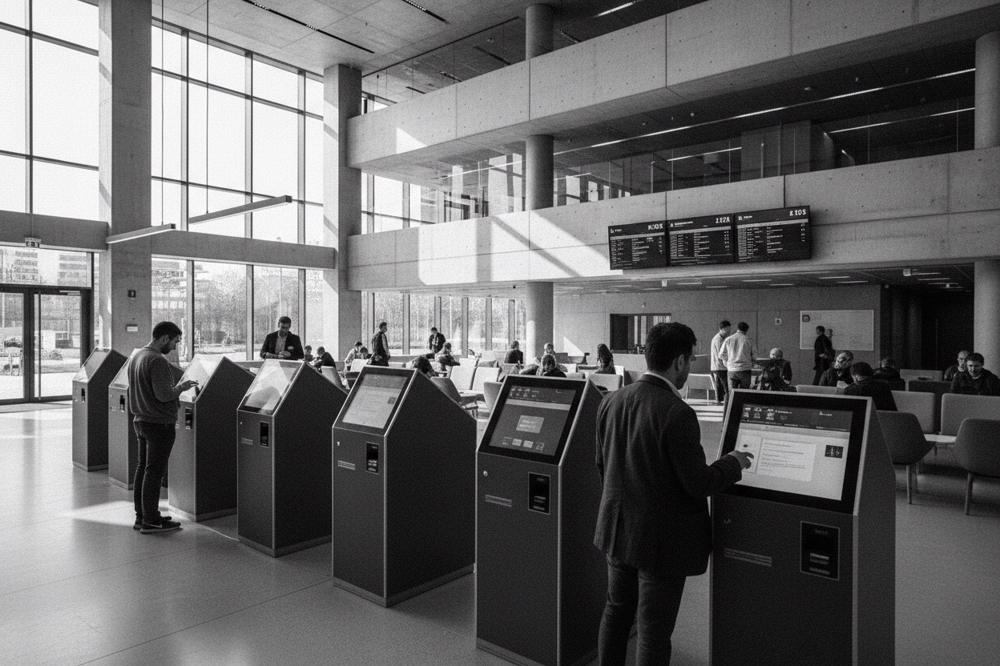

Producto digital, UX/UI
Plataforma de gestión para clientes corporativos
Rediseñamos el flujo de atención de una operación B2B. El piloto de autoatención bajó el tiempo de espera promedio de 42 a 12 minutos.
Consultoría de diseño e innovación corporativa
Diseñamos productos digitales y rediseñamos procesos con IA. El equipo interno queda capaz de sostenerlos.
Cada proyecto terminó con algo operando.

Producto digital, UX/UI
Rediseñamos el flujo de atención de una operación B2B. El piloto de autoatención bajó el tiempo de espera promedio de 42 a 12 minutos.
Artículo, metodología
Automatizar un proceso que nadie entiende multiplica el problema. Cuándo conviene rediseñar primero y automatizar después.
Procesos con IA, transformación
Formamos al equipo interno para operar y evolucionar la plataforma sin depender de nosotros. Sigue en producción dos años después.
Cuatro líneas de trabajo. Se contratan juntas o por separado.
Del concepto al producto en operación. Crecimiento que el negocio pueda pagar y el equipo mantener.
Identificamos en qué procesos la IA rinde. Algunos conviene rediseñarlos antes, otros conviene dejarlos como están.
Diseñamos con las personas que van a operar el proceso, además de quienes lo aprueban.
Formamos al equipo interno para que decida por su cuenta dónde usar IA.
Reducir el riesgo antes de comprometer presupuesto.
Entendemos el negocio y a quienes lo usan antes de diseñar.
Probamos los prototipos con usuarios reales antes de comprometer inversión.
El equipo interno queda capaz de sostener y hacer crecer lo que construimos juntos.
Lo que aprendemos en cada proyecto. Escribimos cuando hay algo que decir.
Todavía no publicamos ninguna. La primera sale cuando termine el proyecto que estamos escribiendo.
Hablemos de su próximo paso
La primera conversación no tiene costo.